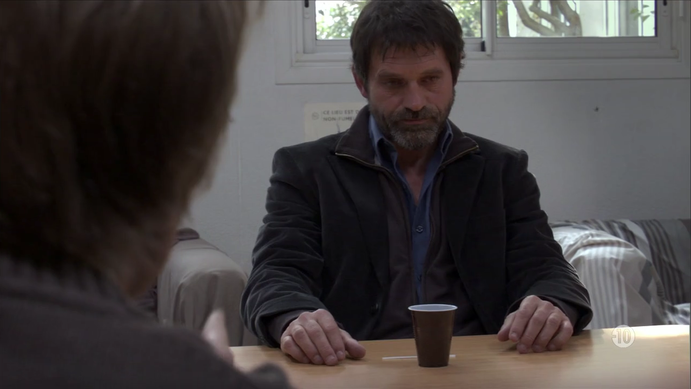

Streaming server
Because usage agreements do not allow streaming videos directly to the participants, each participant must install a streaming server in their own facilities.
Setting up your own streaming server
-
Install NodeJS
http-serverby following these instructions. -
Make sure videos from the three corpora (INA, DW and 3-24) are organized as follows in the same directory (hereafter denoted __ROOT__):
__ROOT__/INA/snowden/F2_TS/*/*.mp4 __ROOT__/INA/snowden/F5_TS/*/*.mp4 __ROOT__/DW/DW-news-DE/*.mp4 __ROOT__/DW/DW-news-EN/*.mp4 __ROOT__/DW/Euromaxx-EN/*.mp4 __ROOT__/3-24/*.mp4
-
Run
http-serverto server the "mp4" videos:$ http-server -d false -i false --cors —c __ROOTDIR__ Starting up http-server, serving __ROOTDIR__ on: http://0.0.0.0:8080
-
Type in the URL of the streaming server (e.g.
http//localhost:8080):
Testing the streaming server
Pressing the Test button below will try to seek a specific frame of three different videos of the test set (one for each corpus.)
If the actual frame correspond to the expected screenshot, then you are good to go!
| Corpus | Expected | Actual | |
|---|---|---|---|
| INA |  |
||
| DW | |
||
|
|

|
 | |